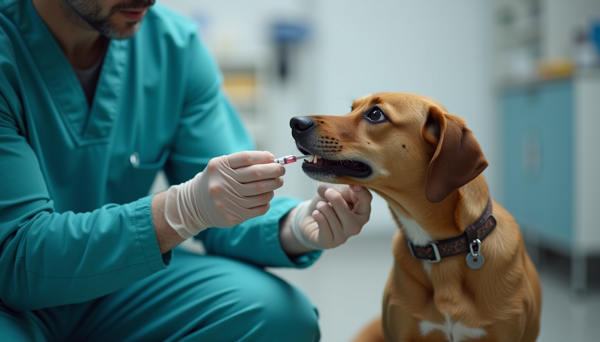

Rabies is a deadly viral disease that affects mammals, including humans. Each year, tens of thousands of people die from rabies, primarily in developing countries where access to vaccines and medical care is limited. The World Health Organization (WHO) estimates that rabies causes approximately 59,000 deaths annually, with the majority of cases occurring in Africa and Asia. This alarming statistic highlights the urgent need for awareness and action to combat this preventable disease.
In this blog post, we will explore the Tails of Care initiatives aimed at combatting rabies, the importance of vaccination, and how you can get involved in making a difference.

A veterinarian giving a rabies vaccine to a dog during a vaccination drive.
Understanding Rabies
What is Rabies?
Rabies is a viral infection caused by the rabies virus, which is typically transmitted through the bite of an infected animal. The virus affects the central nervous system, leading to inflammation of the brain and, ultimately, death if left untreated. Symptoms can include fever, headache, confusion, and agitation, progressing to paralysis and coma.
How is Rabies Transmitted?
The primary carriers of rabies are wild animals, particularly bats, raccoons, skunks, and foxes. However, domestic animals, especially unvaccinated dogs and cats, can also transmit the virus to humans. The transmission occurs when saliva from an infected animal enters the body through a bite or scratch.
The Global Impact of Rabies
Rabies is a significant public health issue, particularly in low-income countries where vaccination programs are scarce. The disease disproportionately affects children, who are often more vulnerable to animal bites. In many regions, rabies remains a leading cause of death from infectious diseases, highlighting the need for effective prevention strategies.
The Role of Vaccination
Importance of Vaccination
Vaccination is the most effective way to prevent rabies. Vaccines are available for both humans and animals, and widespread vaccination can significantly reduce the incidence of the disease. For example, vaccinating dogs and cats not only protects them but also helps create a barrier against the transmission of rabies to humans.
Vaccination Programs
Tails of Care initiatives focus on implementing vaccination programs in high-risk areas. These programs often include:
- Community Vaccination Drives: Organizing events where pet owners can bring their animals for free or low-cost vaccinations.
- Education Campaigns: Raising awareness about the importance of vaccinating pets and the dangers of rabies.
- Collaboration with Local Governments: Partnering with local authorities to ensure that vaccination efforts are sustainable and reach the most vulnerable populations.
Success Stories
In regions where vaccination programs have been implemented, there have been significant reductions in rabies cases. For instance, in parts of Africa, community vaccination drives have led to a decrease in rabies-related deaths by over 90%. These success stories demonstrate the effectiveness of vaccination in controlling the disease.
Tails of Care Initiatives
Overview of Tails of Care
Tails of Care is a nonprofit organization dedicated to improving the lives of animals and humans through education, vaccination, and community engagement. Their initiatives focus on combatting rabies and promoting responsible pet ownership.
Key Initiatives
- Vaccination Campaigns: Tails of Care organizes regular vaccination drives in underserved communities, ensuring that pets receive the necessary vaccinations to prevent rabies.
- Community Education: The organization conducts workshops and seminars to educate pet owners about the importance of vaccination, responsible pet ownership, and the dangers of rabies.
- Support for Animal Welfare: Tails of Care collaborates with local shelters and rescue organizations to promote the adoption of vaccinated animals, reducing the number of unvaccinated pets in communities.
- Advocacy: The organization advocates for policies that support animal health and welfare, including mandatory vaccination laws for pets.
How You Can Get Involved
There are several ways you can support Tails of Care initiatives and help combat rabies:
- Volunteer: Join local vaccination drives or educational workshops to help spread awareness and provide support to pet owners.
- Donate: Financial contributions can help fund vaccination campaigns and educational programs.
- Spread the Word: Share information about rabies prevention and the importance of vaccination on social media or within your community.
The Importance of Community Engagement
Building Trust
Community engagement is crucial for the success of rabies prevention initiatives. Building trust with local populations encourages pet owners to participate in vaccination programs. Tails of Care focuses on creating relationships with community leaders and residents to foster a sense of ownership over the health of their pets and families.
Empowering Communities
By involving communities in the fight against rabies, Tails of Care empowers individuals to take action. This includes educating pet owners about the signs of rabies, the importance of seeking medical attention after a bite, and the need for regular vaccinations.
Success Through Collaboration
Collaboration with local veterinarians, animal shelters, and government agencies enhances the effectiveness of rabies prevention efforts. By working together, these organizations can pool resources, share knowledge, and reach a broader audience.
The Future of Rabies Prevention
Innovative Approaches
As the fight against rabies continues, innovative approaches are being explored. For example, the use of oral rabies vaccines for wildlife has shown promise in reducing rabies transmission among wild animal populations. Additionally, advancements in technology, such as mobile apps for reporting animal bites, can improve response times and vaccination rates.
Global Goals
The WHO has set ambitious goals to eliminate rabies as a public health threat by 2030. Achieving this goal requires a concerted effort from governments, NGOs, and communities worldwide. Tails of Care is committed to playing a vital role in this global initiative by continuing to expand its vaccination programs and educational outreach.
Conclusion
Rabies is a preventable disease that poses a significant threat to public health, particularly in vulnerable communities. Through initiatives like Tails of Care, we can combat rabies by promoting vaccination, educating pet owners, and engaging communities.
By joining the fight against rabies, you can make a difference in the lives of animals and humans alike. Whether through volunteering, donating, or simply spreading awareness, every action counts. Together, we can work towards a future where rabies is no longer a threat to our communities.
Take the first step today—get involved with Tails of Care and help us combat rabies for a healthier tomorrow.